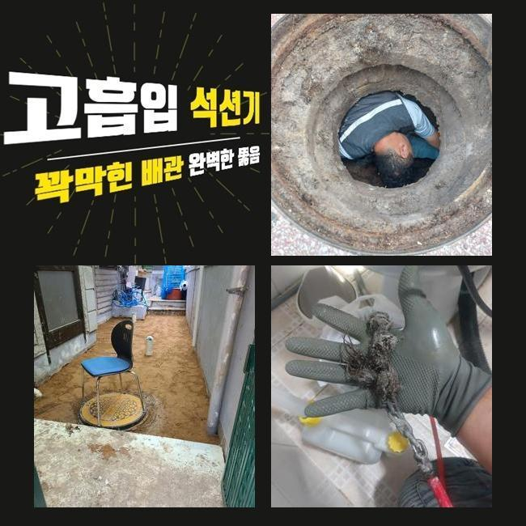
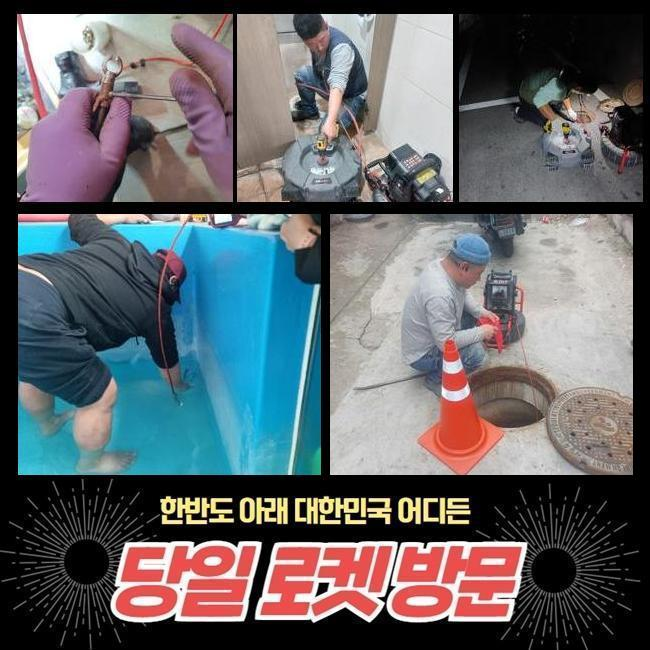
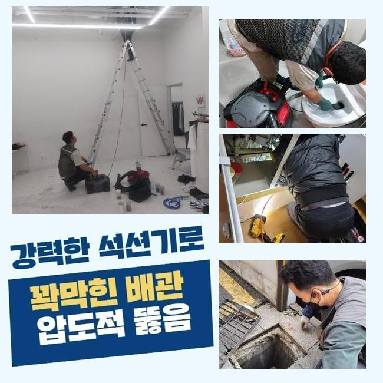
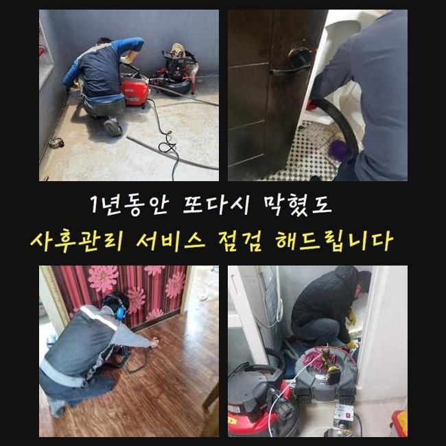
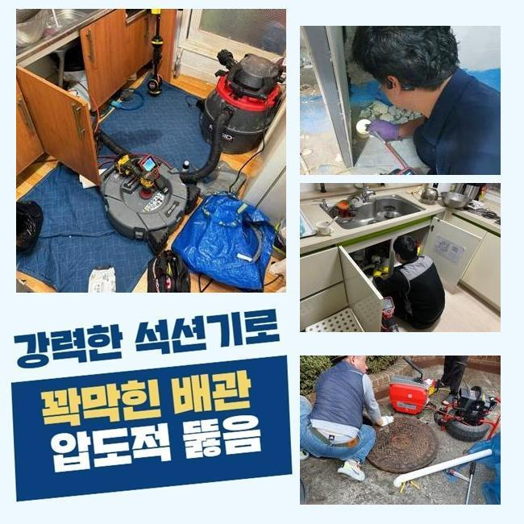
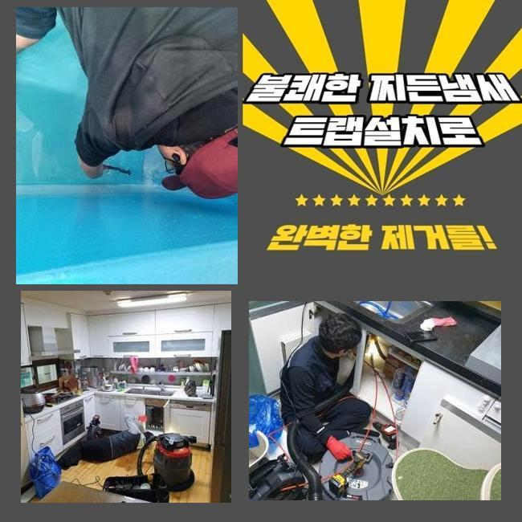
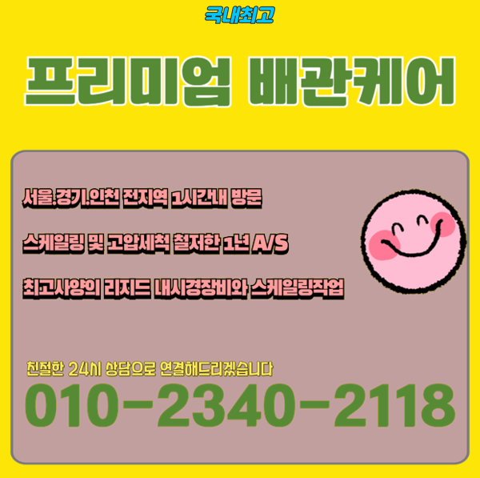

🏠 안산 월피동변기막힘 사이동 하수구뚫는비용 부속수리
안산 변기막힘 전문 시공 후기

📋 작업 개요
- 위치: 안산
- 서비스 유형: 변기막힘, 하수구막힘, 배관막힘, 맨홀막힘, 역류해결, 뚫는업체, 배관청소, 고압세척
- 작업 일시: 2025. 3. 8. 22:36
- 업체명: 하수구수사대 (010-5615-2118)
🔍 문제 상황
안산 월피동변기막힘 사이동 하수구뚫는비용 부속수리
배수관은 일반적인 집이나 매장 등에 당연히 배치되는 설비로써 아주 중요해요
오염된 물을 처리함으로써 청결한 생활을 영위 할 수 있도록 하며 질병의 발생으로부터 보호합니다
이러한 배수구가 막혀버려 순환이 되지 못하는 경우엔 누적된 불순물이 부패되어 썩는 냄새가 나게되고 하수구가 있는 곳에서 크고 작은 문제들이 일어나게 됩니다
이로 인해 하수가 역류하여 넘치거나 깨끗한 물을 사용할 수 없는 환경으로 일상의 불편한 상황이 발생합니다
이른 오전에 배수관의 역류 상황으로 다급한 전화를 받아 서둘러 목적지로 출발했습니다
고객님께서 알려주신 집부터 확인하였습니다
전체적으로 살펴본 결과 집안에서 하수를 내려보낼때마다 부동전에서 이어진 하수라인에서 물이 역방향으로 진행하는 현상들이 일어나고 있었어요
특히나 화장실에서 물을 흘려보내면 하수관을 통해서 발생하는 고약한 냄새까지 심각했어요

🔎 원인 분석
💡 전문가 진단: 정밀 진단 장비를 사용하여 슬러지의 고착 여부를 판명하고 타격/세척 작업을 실시했습니다.
해당 문제들을 처리하기 위해서 내시경장치를 사용해서 본관의 안쪽상황을 점검했어요
오염물질이 쌓이면서 하수라인에서 지독한 악취까지 발생시키는 상황이였고 집안으로 역류하는 등의 사고가 발생할 수도 있기때문에 신속한 시공에 들어갔어요
중심이 되는 본관의 중요성을 안내 해드릴게요
중심 맨홀는 생활을 하시면서 발생하는 오염된 물을 배출시키는 것에 있어 큰역할을 하는 곳입니다
중심관이 막히게되면 배관 안에서부터 흐르지못한 오수가 부동전쪽에서 역류하는 상황까지 발생하는 경우가 많습니다
내부로 연결된 하수관만을 수리한다고 해도 원인을 처리하는게 쉽지 않으므로 메인이 되는 중심관을 수리하셔야 이후 순환이 정상적으로 가능합니다
일반 가정집에서 발견되는 작은 문제점은 자체적으로 해결하실 수도 있지만 여러관이 연결 되어있는 메인 배관은 고압세척장치를 써서 단단하게 변형된 불순물을 청소합니다
고압세척기기의 노즐라인은 배수관의 구석진 부분까지 작업이 가능하므로 신속정확하게 세척합니다
본관에 고압의 세척장치를 활용해 음식에서 나온 찌꺼기들과 침전물을 세척했습니다
청소를 마치고 내시경장치를 활용하여 물이 잘 순환되는지 재확인 하였습니다

🔧 작업 과정
고객께서 하수관의 내부를 같이 체크 하시면서 하수관이 완전히 청소 완료 된 것을 보고 안심하시며 마지막 정리까지 요청 하셨어요
그다음 현장으로 넘어가서 배수관이 막힌 문제점을 해결했습니다
두번째 현장도 역시 베란다에서 하수가 역류하는 상황으로 이물질이 섞여 올라와서 고약한 냄새를 풍기는 상태였습니다
이런 경우엔 세탁실의 배관쪽에서 라인 전체를 청소하는게 보편적이나 오늘같은 경우엔 작업이 쉽지 않은 트랩 구조로 난관에 봉착했어요
P트랩의 경우에 벌레의 침입을 방지하는데 유리하지만서도 구조상 노폐물이 자꾸 쌓여 하수관 막힘으로 인한 역류사고를 일으키게 되는 이유가 될 수 있습니다
이와같은 경우에는 고압세척장비의 사용이 불가한 상황들이 많아요
노즐선을 투입할 수 없으므로 사례자님께 추가적인 비용들을 청구하지 않기위해 합리적인 작업을 생각했습니다
복잡하고 어려운 트랩의 구조상 고압세척장치를 사용하게 되면 하수라인에 피해를 줄 수도 있기때문에 샤프트장비를 활용해 작업을 이어나갔습니다
샤프트기는 회전하는 힘을 이용하여 배수관에 쌓여있는 침전물을 청소합니다
샤프트장비는 하수관을 보호하면서 배관의 끝까지 들어갈 수 있어요
기기의 끝부분에 부드러운 장비를 결합하여 이물질들을 세척할 수 있기때문에 곡선 부분에도 투입 할 수 있어서 하수라인의 깊은 곳에 누적된 침전물도 깔끔하게 세척합니다
한번으로는 제거가 불가능 했으므로 샤프트기계를 지속적으로 재투입하여 변형되어버린 슬러지를 완벽하게 제거했어요
작업을 끝내고 통수가 잘 이루어지는지 체크했고 의뢰인께서도 역류현상이 일어났던 하수구를 같이 확인하시고나서 만족하시며 감사인사를 전하셨습니다
배수구가 막힌 경우에 그냥 방치하신다면 배수라인 안쪽에 누적된 침전물이 부패되면서 지독한 냄새까지 생겨나게되며 통수가 정상적으로 되질 않아서 오수가 거꾸로 올라오는 문제들이 발생합니다
배관의 안쪽에 압력을 받으면 하수라인 벽이 피해를 입으며 파손의 위험이 생기며 비용의 부담과 함께 많은 시간까지 들여야합니다


✅ 작업 완료
배수관 역류상황이 발견 되셨다면 전문 기술진에게 문의하셔서 빠른 대응방법을 취하시는게 가장 좋습니다
오늘 현장에서는 배수관 역류현상을 해결했고 배수구 악취 청소까지 완수했어요
고객의 사용방법을 주의하셔야 한다고 알려드리고 하수관 문제들도 재발하는 일이 없도록 꼼꼼하게 확인하였습니다
하수설비에 이상이 생겨 곤란하신 경우 밤이든 낮이는 저희 전문가에게 의뢰 맡겨주시면 신속정확하게 해결하겠습니다!




⚠️ 하수구 배관 막힘 예방 및 관리 가이드
- ✅ 머리카락, 비닐, 물티슈 등 물에 분해되지 않는 이물질은 하수구 유입을 절대 금지해 주세요.
- ✅ 하수구 거름망을 씌우고 모여진 이물질은 주기적으로 쓰레기통에 바로 비워주셔야 합니다.
- ✅ 배관 노후가 심할 경우 이물질이 더 쉽게 걸리므로 주기적인 배관 세척(고압세척 등)을 권장합니다.
- ✅ 작업 후 1년 이내 재발 시 하수구수사대에서 무상 A/S 보증 서비스를 제공합니다.
💡 핵심 정리
- 확실한 장비 작업(내시경 점검 및 샤프트 스케일링)으로 원인을 뿌리 뽑습니다.
- 작업 후 1년 이내에 동일한 부위 재발 시 100% 무상 A/S 서비스를 보장합니다.
- 서울 · 경기 · 인천 전 지역에 24시간 언제든 긴급 출동할 수 있도록 항시 대기 중입니다.
❓ 자주 묻는 질문 (FAQ)
🚨 안산 변기막힘 문제로 고민이신가요?
정확한 원인 진단과 확실한 시공으로 재발 없는 해결을 약속드립니다.
24시간 긴급 출동 | 서울 · 경기 · 인천 전지역 | 1년 내 재발 시 무상 A/S